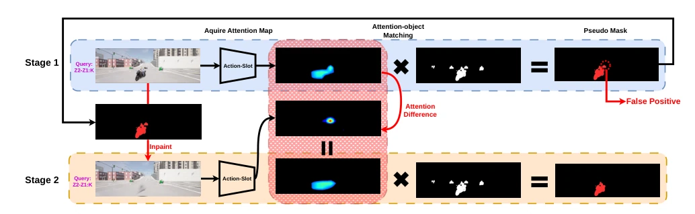
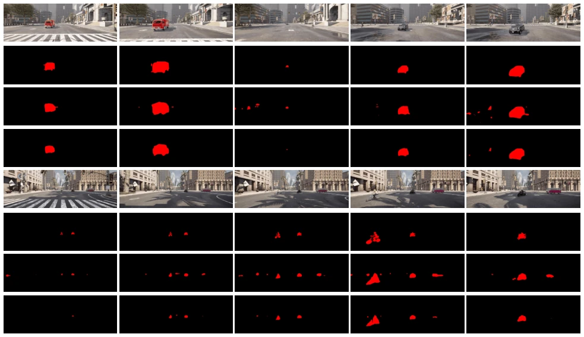

Fig. 1. Overview of Action-Slot for Multi-Agent Atomic Activity Understanding. (a) A multi-agent traffic scene containing multiple concurrent atomic activities, illustrated by colored trajectories. For example, the red trajectory corresponds to the atomic activity Z1-Z4: C+, representing a group of vehicles turning left along a topologically defined path. (b) Action-Slot decomposes the scene into semantically aligned action slots, each capturing one atomic activity without relying on object proposals. (c) The resulting slot representations enable multi-label atomic activity recognition by predicting whether each atomic activity category is present in the scene. (d) The learned action slots provide spatial grounding signals that enable high-quality pseudo-mask generation for weakly supervis

Fig. 4. The Overview of the Proposed Pseudo Mask Selection Framework. First, we generate the initial pseudo mask by matching the attention map with nearby object masks. To alleviate the false positive resulting from the diffuse or ambiguous attention map, we inpaint the initial pseudo mask region and identify the important regions from the attention difference before and after inpainting, then re-associate with object masks to generate selected pseudo masks.
Fig. 5. Visualization of attention maps learned on OATS. Colored masks depict the attention of the activity slots Z4-Z3:C and C2-C1:P+. Note that, while MO successfully predicts the activity C2-C1:P+, the corresponding attention scores are very low.

Fig. 7. Qualitative localization results trained with different pseudo masks. Rows from top to bottom: camera frames, ground-truth masks, predictions without pseudo mask selection, and predictions with pseudo mask selection.